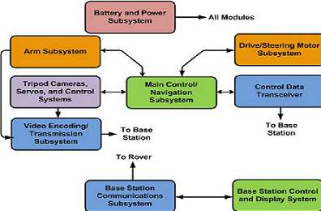
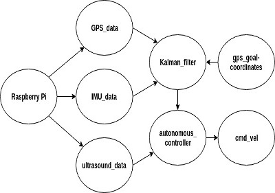
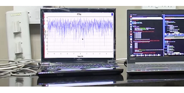
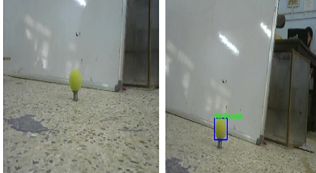
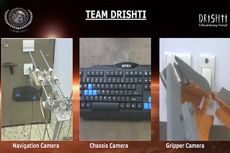
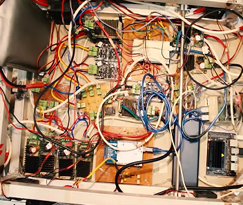

ELECTRONICS AND SOFTWARE

ACTUATION
- All the motors are controlled by Arduino-Mega Microncontroller receiving commands from R-pi serially.
- The driving motors are controlled by Cytron motor drivers while the manipulator motor is handled by Hercules motor drivers.
- High Torque and Low RPM DC Planetary Gear Motors are used for driving the rover.


AUTONOMOUS
- The GPS goal following, obstacle avoidance and ball detection works in synchronization to accomplish the autonomous task.
- The data from GPS module and Inertial Measurement Unit (IMU) are combined using the Kalman Filter for better localization of the rover in the local ‘Map’ frame.
- A PID control system is implemented for efficient and smooth traversal of rover to its designated GPS goal location.
- The ultrasonic sensors are mounted on the rover for detecting and avoiding massive obstacle in rover’s traversal path
COMMUNICATION
- We are using 13 dBi 5 GHz directional antenna (IEEE 802.11a/n) for communication.
- All other devices like laptop, Raspberry Pi and Jetson nano are connected to Antenna via wifi and create a star topology. Antenna provide a uniqe local IP to all connected devices..
- Intercommunication of devices is accomplished by within various ROS nodes which are assigned in a MASTER - SLAVE configuration.


IMAGE PROCESSING
- For object detection and image processing OpenCV and TensorFlow library integrated on Python script is used.
- Arrow and ball detection are achieved by training a model using Keras as the main program interface.
- The Rover aligns itself according to the arrow orientation in order to keep the detected class at the centre of the frame and moves till a distance of less than 2 meters from that object is reached which is calculated by the increasing pixel size of the bounding box.
VIDEO STREAMING AND GUI
- Video streaming is achieved using three Web cameras that are mounted on the Rover. These cam collectively provide a 360° view of the field for effective navigation purpose.
- Video streaming is done over 5Ghz band.
- A Web server is created using the MJPG-4 streamer of Raspberry-Pi for video transmission at base station.
- These feed is visualised at base station by Web GUI.


POWER DISTRIBUTION AND CIRCUITS
- The Rover is supplied with two - 12V and 16V Lipo battery.
- For regulated DC supply, DC-DC buck convertor is used. Apart from that, supply to processor is given by 10,000 and 20,000 mAh power bank.
- Protection of DC components is ensured from reverse polarity using PMOS and Diode.